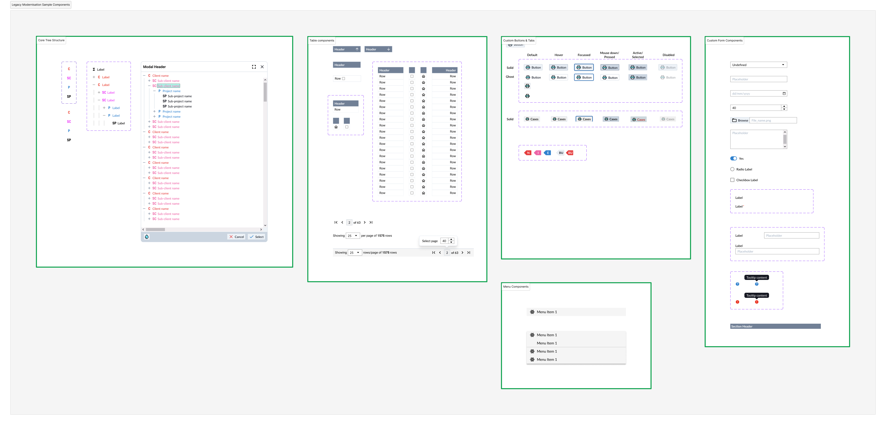

I led the design work for the modernisation of a decades-old desktop application that had become slow, unreliable, and difficult to maintain. The product ecosystem consisted of multiple applications managing overlapping data, resulting in syncing issues and inconsistent records. Documentation was sparse, and while subject-matter experts understood individual areas well, no one had a complete view of user journeys across the system.
The primary challenge was to modernise the application without disrupting existing users. We intentionally committed to a like-for-like approach to preserve familiarity and reduce retraining, which meant design decisions needed to balance usability improvements with a strong respect for existing mental models.
Because best-practice redesign patterns weren’t always appropriate, I focused on deeply understanding the legacy experience before designing anything new. I spent significant time hands-on testing the original application to uncover undocumented features, edge cases, and workflows.
Most screens were table and form-based, so I approached the redesign breadth-first defining consistent layouts, interaction patterns, and component behaviours early, rather than fully designing individual workflows in isolation. This allowed the team to rapidly establish a shared design system that developers could reliably reproduce.
Alongside the application redesign, I worked closely with engineering to support the introduction of a core database and a custom data-migration tool, ensuring that design decisions aligned with complex underlying data transformations.
Testing the legacy application revealed significant hidden functionality, reinforcing the importance of experiential research when documentation is lacking. Earlier, more structured documentation of these discoveries would have improved feature planning and sequencing.
The breadth-first approach accelerated component delivery but meant end-to-end workflows only became fully realised later in the project. During early reviews, some screens felt too close to their legacy counterparts. To address this, I created detailed component-level visual and layout refinements, working directly in the browser using inspection tools to fine-tune spacing, hierarchy, and alignment, and documenting these changes so developers could update component templates consistently.
The care taken to respect existing user behaviour while subtly improving clarity and consistency paid off. Clients responded very positively to the familiarity of the new system and the confidence it gave users during transition. We did need to revisit some early data-consolidation assumptions when visually mapping fields revealed that seemingly duplicated data served different user needs across applications. In future projects, I would visualise these trade-offs earlier to better support shared decision-making with stakeholders.